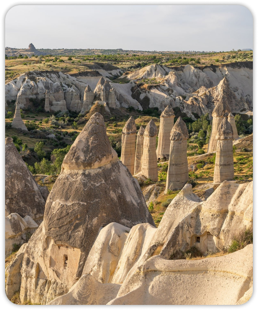
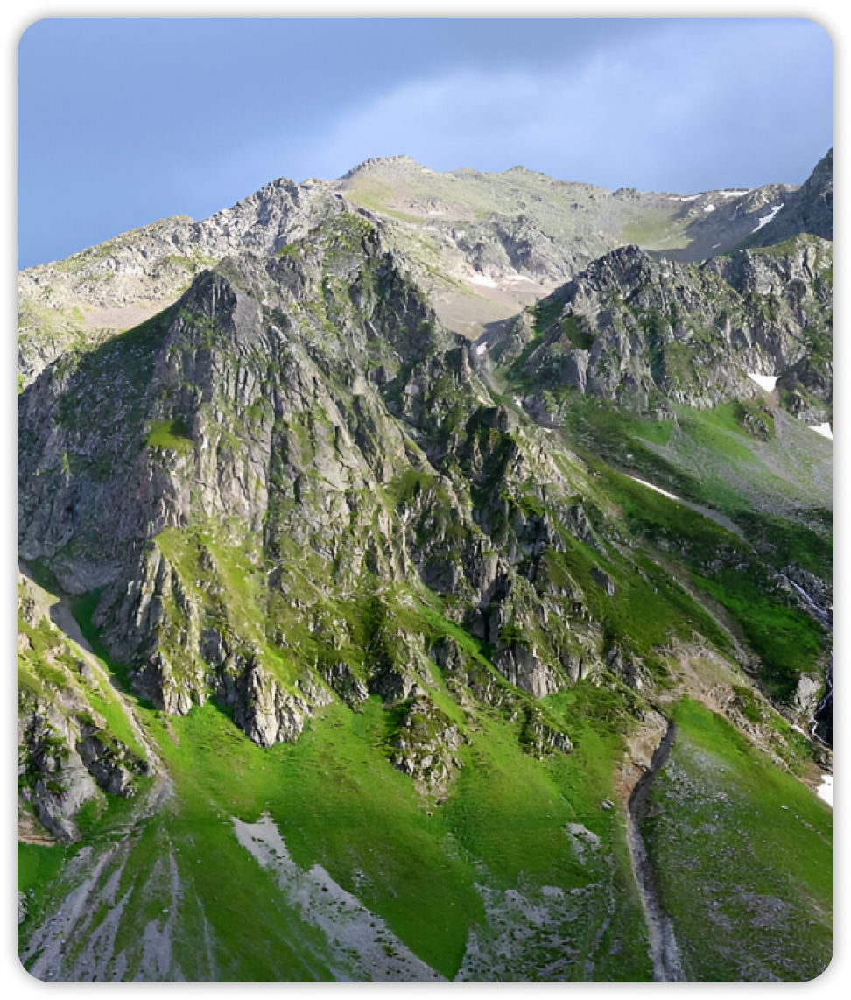

Batas Laut
Batas Darat
Batas Udara
Total luas wilayah Turki adalah sekitar 783.562 km².
Letak Wilayah Turki
Turki adalah negara transkontinental yang terletak di persimpangan dua benua, yaitu Asia dan Eropa.
Letak Geografis
Terletak di persimpangan Balkan, Kaukasus, Timur Tengah, dan Mediterania Timur. Selat Bosporus dan Dardanelles memisahkan wilayah Turki di Asia (Anatolia) dan Eropa (Thrace)
Letak Geografis
Terletak di persimpangan Balkan, Kaukasus, Timur Tengah, dan Mediterania Timur. Selat Bosporus dan Dardanelles memisahkan wilayah Turki di Asia (Anatolia) dan Eropa (Thrace)
Letak Geografis
Terletak di persimpangan Balkan, Kaukasus, Timur Tengah, dan Mediterania Timur. Selat Bosporus dan Dardanelles memisahkan wilayah Turki di Asia (Anatolia) dan Eropa (Thrace)


Bentang Alam
Bentang alam Turki sangat unik karena letaknya yang berada di persimpangan dua benua, Asia (Anatolia) dan Eropa (Thrace). Secara garis besar, Turki didominasi oleh dataran tinggi yang dikelilingi pegunungan tinggi
Karakteristik Wilayah Daratan & Perairan